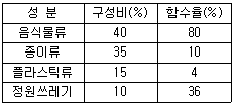

환경기능사 (2004-02-01 기출문제)
1과목: 대기오염방지
1. 냉장고의 냉매와 스프레이용의 분사제등 CFC 화학 물질이 대기에 미치는 가장 큰 오염현상은?
- 산성비
- 오존층 파괴
- 열섬효과
- 광화학 Smog
(정답률: 81%)

2. 유량이 20000m3/hr 인 오염된 공기를 흡습탑을 통하여 정화하려 할 때 흡습탑의 지름은? (단,흡습탑의 유속은 2.5m/sec 이다.)
- 1.68 m
- 3.74 m
- 5.35 m
- 17.90 m
(정답률: 29%)
3. 분자식 CmHn인 탄화수소 가스 1Sm3당 완전 연소시 필요한 이론 산소량은? (단, mole기준)
- m + n
- m + (n/2)
- m + (n/4)
- m + (n/8)
(정답률: 66%)
4. 400℃,680㎜Hg상태에서 200m3의 배출가스는 표준상태에서 얼마인가?
- 52 Sm3
- 61 Sm3
- 68 Sm3
- 73 Sm3
(정답률: 25%)
5. 통풍관이나 굴뚝에서 배기가스의 유속을 측정할 수 있는 가장 적당한 기구는?
- 습식가스미터(wet gas meter)
- 휴대형 공기채취기(Handy air sampler)
- 피토관(pitot tube)
- 대용량 공기채취기(High volume air sampler)
(정답률: 67%)
6. 대기중에 존재하는 질소산화물과 탄화수소가 자외선에 의해 광화학 스모그가 발생될 때 생성되며, 호흡기 계통의 피해와 면역성을 감소시키고 눈을 따갑게 하는 2차 오염 물질은?
- 이산화탄소
- 황산화물
- 일산화탄소
- 옥시단트
(정답률: 50%)
7. 1 V/V ppm에 상당하는 W/W ppm값이 가장 큰 대기오염 물질은?
- 염화수소
- 이산화황
- 이산화질소
- 시안화수소
(정답률: 60%)
8. 다음중 질소산화물의 저감방법이 아닌 것은?
- 배기가스 재순환
- 2단 연소
- 과잉공기량 증대
- 연소온도 조정
(정답률: 83%)
9. 다음중 상온에서 물에 대한 용해도가 가장 큰 기체는?
- SO2
- CO2
- HCl
- Cl2
(정답률: 57%)
10. 충진탑의 충진물의 구비조건 중 틀린 항목은?
- 단위용적에 대한 전표면적이 커야한다.
- 공극률이 크며, 압력손실이 작고, 충진밀도가 커야한다.
- 액의 홀더엎(hold up)이 커야 한다.
- 내열성과 내식성이 커야 한다.
(정답률: 55%)
11. 조혈기능 장해를 일으키는 대표적인 물질은?
- 크롬
- 벤젠
- 셀레늄
- 석면
(정답률: 58%)
12. 탄소 1kg을 이론 공기량으로 완전 연소시켰을 때 발생하는 연소 가스량(Sm3/kg)은?
- 5.6
- 8.9
- 12.3
- 22.4
(정답률: 33%)
13. 먼지의 농도와 가스의 체적이 각각 30mg/Sm3, 100Sm3와 60mg/Sm3, 50Sm3인 가스를 섞으면 이 때의 먼지 농도와 가스의 체적은?
- 30mg/Sm3, 100Sm3
- 40mg/Sm3, 150Sm3
- 60mg/Sm3, 100Sm3
- 90mg/Sm3, 150Sm3
(정답률: 37%)
14. 지름이 0.2m, 유효높이 3m인 원통형 여과포 16개를 사용하여 유량이 20m3/min인 가스를 처리하였다. 여과포의 표면 여과속도는?
- 0.58m/min
- 0.66m/min
- 0.79m/min
- 1.02m/min
(정답률: 41%)
15. 흡수공정으로 유해가스를 처리할 때, 흡수액이 갖추어야 할 요건으로 옳지 않은 것은?
- 용해도가 커야 한다.
- 점성이 작아야 한다.
- 휘발성이 커야 한다.
- 가격이 저렴하여야 한다.
(정답률: 66%)
2과목: 폐수처리
16. 살수여상의 주요 정화작용은 다음 어느 것인가?
- 기계적 여과
- 호기성 산화
- 혐기성 분해
- 화학적 응집침전
(정답률: 43%)
17. 화학적 처리의 장점이 아닌 것은?
- 처리시간이 짧다
- 처리효과가 비교적 일정하며 안정되어 있다
- 고도의 조작기술이 필요하지 않다
- 물리적 처리에 비해 넓은 장소를 필요로 하지 않는다
(정답률: 56%)
18. SS 측정은 다음 어느 분석법에 해당되는가?
- 용량법
- 중량법
- 용매추출법
- 흡광측정법
(정답률: 50%)
19. 생물학적 처리방법과 방법의 원리가 잘못 설명된 것은?
- 회전원판법 - 미생물 부착성장형으로서 별도의 산소공급장치가 없다.
- 접촉안정법 - 생물흡수(Biosorption)에 의하여 폐수중의 유기물을 슬러지에 흡착시킨다.
- 심층포기법 - U자형의 관을 이용하여 포기를 실시하며 주로 부상조를 사용하여 슬러지를 분리 시킨다.
- 산화지법 - 수심 1m이하의 경우 호기성 세균의 산소공급원은 조류와 균류이다.
(정답률: 59%)
20. Jar-test를 실시한 결과 pH 7.3에서 500mL의 폐수에 0.2%AI2(SO4)3· 18H2O(밀도=1.0g/㎝3) 용액 20mL를 넣었을 경우 가장 효과가 좋았다면 이 폐수 100m3/day를 처리하기 위해 소요되는 응집제의 양은 하루 몇kg 인가?
- 8
- 10
- 12
- 14
(정답률: 23%)
21. 투입분뇨량의 8배 정도가 가스로 생성된다면 1일 100kL를 처리하는 분뇨처리장에서 하루에 생성되는 CH4 가스의 량으로 가장 적절한 것은?(단, 분뇨처리장은 정상적으로 운영되고 있다고 가정함)
- 약 180m3
- 약 320m3
- 약 540m3
- 약 720m3
(정답률: 40%)
22. 다음중 활성 슬러지 공법의 운전시 발생되는 슬러지 팽화의 원인으로 가장 거리가 먼 것은?
- 용존산소의 과포화
- 영양물질의 부족
- 짧은 SRT
- 운전미숙
(정답률: 56%)
23. 침전지에서 고형물질의 침강속도를 증가시키려면 다음 중 어느 경우가 가장 효과적인가?
- 폐수와 고형물질간의 밀도차가 크고 폐수의 점성도가 작고, 고형물질의 입자 직경이 클수록 좋다.
- 폐수와 고형물질간의 밀도차가 작고, 점도가 크고, 고형물질의 입자가 작을수록 좋다.
- 폐수와 고형물질간의 밀도차에는 관계없이 점성도가 크고, 고형물질의 입자가 클수록 좋다.
- 폐수와 고형물질간의 밀도차가 크고 점성도가 크고, 고형물질의 입자가 작을수록 좋다.
(정답률: 63%)
24. 용존 산소에 대한 설명이다. 맞는 것은?
- 압력이 낮을 수록 용해율 증가
- 수온이 높을 수록 용해율 증가
- 물의 흐름이 난류일 때 용해율 감소
- 염분의 농도가 높을수록 용해율 감소
(정답률: 33%)
25. 직경이 30㎝인 하수관에 유량 20m3/min의 하수를 흘러보낸다면 유속은?(단, 하수관 단면적 모두에 하수가 가득 찬다고 가정함)
- 약 3.2m/sec
- 약 4.7m/sec
- 약 6.5m/sec
- 약 8.3m/sec
(정답률: 35%)
26. 모래, 자갈, 뼈조각 등과 같은 무기성의 부유물로 구성된 혼합물을 무엇이라 하는가?
- 스크린
- 그릿
- 슬러지
- 스컴
(정답률: 71%)
27. 폐수에 명반(Alum)을 사용하여 응집침전을 실시하는 경우 어떤 침전물이 생기는가?
- 탄산나트륨
- 수산화나트륨
- 황산알루미늄
- 수산화알루미늄
(정답률: 43%)
28. 눈금이 있는 실린더에 슬러지를 1L 담아 30분간 침전시킨 결과 슬러지의 부피가 200mL였다. 이 슬러지의 SVI는?(단, MLSS의 농도는 2000 mg/L이다.)
- 10
- 50
- 100
- 200
(정답률: 49%)
29. 임호프탱크(Imhoff tank)의 구성요소가 아닌 것은?
- 포기실
- 소화실
- 침전실
- 스컴실
(정답률: 38%)
30. 6가 크롬(Cr)을 처리하기 위한 방법은?
- 산화침전법
- 환원침전법
- 오존산화법
- 전해산화법
(정답률: 69%)
31. 수산이온(OH-)의 농도 10.0× 10-10mol/L일 때 수소이온 농도(pH)는?
- 3
- 5
- 9
- 10
(정답률: 36%)
32. 실험실에서 일반적으로 BOD를 측정할 때 배양 조건은?
- 5℃에서 20일간 배양
- 5℃에서 20번 배양
- 20℃에서 5일간 배양
- 20℃에서 5번 배양
(정답률: 80%)
33. 여과지 운전 중에 발생하는 주요 문제점과 가장 거리가 먼 것은?
- 여재의 비활성화
- 진흙덩어리의 축적
- 여재층의 수축
- 공기 결합
(정답률: 33%)
34. 흡착공정에서 흡착재의 흡착이 완료되어 유출수에서 용질이 배출되는 점은 무엇이라 하나?
- 한계점
- 유출점
- 극한점
- 파괴점
(정답률: 39%)
35. 물에 주입된 염소의 약 23%는 HOCl로 그리고 77%는 해리된 OCl-로 존재하는 pH의 값은?
- pH 3
- pH 6
- pH 8
- pH 10
(정답률: 45%)
3과목: 폐기물처리
36. 수송차량 또는 쓰레기 투하방식에 따라 구분한 적환장의 형식으로 알맞지 않는 것은?
- 저장 투하방식
- 직접-저장 복합 투하방식
- 직접 투하방식
- 간접 투하방식
(정답률: 54%)
37. 슬러지처리의 목적과 가장 거리가 먼 것은?
- 재생화
- 안정화
- 안전화
- 감량화
(정답률: 52%)
38. 분뇨를 소화처리할 경우 발생되는 가스량(부피)은 분뇨 투입량(부피)의 약 몇 배 정도가 발생하는가? (단, 소화조는 정상 운전된다.)
- 1.5 - 2배
- 3 - 5배
- 8 - 10배
- 15 - 20배
(정답률: 40%)
39. 수거분뇨의 특징이 아닌 것은?
- 고농도 유기물을 함유하며 고액분리가 쉽다.
- 분과뇨의 혼합비(Vol %)는 1:9 정도이다.
- 뇨의 80-90%는 질소화합물로 이루어져 있다.
- pH 강하를 막는 완충작용이 있다.
(정답률: 51%)
40. 폐기물의 기계적 분별원리가 아닌 것은?
- 체분별
- 비중차분별
- 용제분별
- 침강분별
(정답률: 43%)
41. 도시 쓰레기 수거계획상 가장 중요시되는 것은?
- 수거지역
- 수거인부
- 수거빈도
- 수거노선
(정답률: 60%)
42. 반고상폐기물의 고형물함량의 범위로 알맞는 것은?
- 3%이상-10%미만
- 5%이상-15%미만
- 15%이상-25%미만
- 25%이상-35%미만
(정답률: 69%)
43. 슬러지의 건조된 고형물(dry solid)의 비중이 1.5이고 건조이전의 고형물(dry solid) 함량이 30%일 때 슬러지의 비중은 얼마인가? (단, 물의 비중은 1.000으로 한다.)
- 0.90
- 1.00
- 1.11
- 1.27
(정답률: 37%)
44. 소각로에서 발생되는 다이옥신의 제거를 위해 이용되는 집진기는?
- 전기식 집진기
- 관성력 집진기
- 여과식 집진기
- 중력식 집진기
(정답률: 56%)
45. 매립지에서 발생하는 가스조성에서 가장 많은 구성비율을 가지는 것은? (단, 정상적으로 안정화된 상태)
- CO2 - H2
- CO2 - O2
- CH4 - H2
- CH4 - CO2
(정답률: 63%)
46. 폐기물 20000㎏/d을 1일 10시간 가동하여 소각 처리하려고 한다. 소각로내의 열부하가 40000k㎈/m3· hr이며 폐기물의 발열량이 500k㎈/㎏이라면 소각로의 부피는?
- 10m3
- 15m3
- 20m3
- 25m3
(정답률: 27%)
47. 슬러지를 혐기성으로 소화시키는 목적이 아닌 것은?
- 슬러지 무게와 부피를 감소시킨다.
- 이용 가치가 있는 부산물을 얻을 수 있다.
- 병원균을 죽이거나 통제할 수 있다.
- 호기성보다 빠른 시간에 처리할 수 있다.
(정답률: 42%)
48. 적환장의 위치로의 갖추어야 할 요건이 아닌 것은?
- 공중위생 및 환경에의 영향이 최소인 곳
- 2차 수송수단과 연계가 잘되는 곳
- 설치와 작업이 용이한 곳
- 발생 지역과 거리가 먼 곳
(정답률: 76%)
49. 폐기물에서 에너지를 회수하는 방법이 아닌 것은?
- 혐기성 소화
- 슬러지 개량
- RDF 제조
- 소각열 회수
(정답률: 52%)
50. 전단식 파쇄기에 관한 설명으로 틀린 것은?
- 목재류, 플라스틱류, 종이류 파쇄에 효과적이다
- 파쇄시 분진, 소음, 진동의 발생이 현저하여 폭발의 위험성이 높다
- 파쇄후 폐기물의 입도가 거칠지만 파쇄물의 크기를 고르게 할 수 있다
- 충격파쇄기에 비해 대체적으로 파쇄속도가 느리고 이물질의 혼입에 대해 약하다
(정답률: 52%)
51. 이론공기량이 5 Sm3/kg이고 공기비가 1.2일 때 실제로 공급된 공기량은?
- 0.42 Sm3/kg
- 0.6 Sm3/kg
- 4.2 Sm3/kg
- 6.0 Sm3/kg
(정답률: 30%)
52. 다음은 생활 쓰레기의 성분별 구성비와 함수율을 나타낸 것이다. 이 쓰레기의 평균 함수율은?

- 35.9%
- 37.1%
- 39.7%
- 41.3%
(정답률: 50%)
53. 수분 함량이 20%인 폐기물을 건조시켜 5%가 되도록 하려면 폐기물 1000kg당 증발시켜야 할 수분의 양은?(단, 폐기물 비중은 1.0)
- 137.5kg
- 157.9kg
- 161.3kg
- 173.1kg
(정답률: 40%)
54. 슬러지를 200∼230℃로 가열한 다음 높은 압력을 가하여 유기물을 화학적으로 산화시키는 방법은?
- 포졸란(Pozzolan) 공법
- 산소산화(Oxidation) 공법
- 짐머만(Zimmerman) 공법
- 후래시(flash) 공법
(정답률: 73%)
55. 폐기물 매립지에서 발생하는 침출수 중의 생물학적 난분 해성 유기물질을 산화 분해시키는데 이용되는 펜턴시약(Fenton agent)의 성분은?
- H2O2와 FeSO4
- KMnO4와 FeSO4
- H2SO4와 Al2(SO4)3
- Al2(SO4)3와 KMnO4
(정답률: 58%)
4과목: 소음 진동학
56. 하중의 변화에 따라 고유진동수를 일정하게 유지할 수 있으며, 부하능력이 광범위하고 자동제어가 가능한 고급방진 시설은?
- 공기스프링
- 방진고무
- 금속스프링
- 진동절연
(정답률: 52%)
57. 1/3 옥타브 밴브에서 중심주파수 1000Hz가 가지는 상한주파수와 하한 주파수를 바르게 나타낸 것은?(단, 상한주파수, 하한주파수 )
- 1122Hz, 891Hz
- 1420Hz, 710Hz
- 1230Hz, 862Hz
- 1096Hz, 921Hz
(정답률: 31%)
58. A공장내 소음원에 대하여 소음도를 측정한 결과 각각 L1 = 90 dB, L2 = 96 dB, L3 =101 dB 이었다. 이 소음원을 동시에 가동시킬 때의 합성 소음도는?
- 96 dB
- 99 dB
- 102 dB
- 107 dB
(정답률: 37%)
59. 임의의 측정시간 동안 발생한 변동 소음의 총에너지를 같은 시간내의 정상 소음의 에너지로 치환하여 얻어진 소음도를 무엇이라 하는가?
- 측정소음도
- 대상소음도
- 평가소음도
- 등가소음도
(정답률: 57%)
60. 파동의 특성 중 회절에 관한 설명이 바르지 못한 것은?
- 회절하는 정도는 파장에 반비례한다
- 슬릿의 폭이 좁을수록 회절하는 정도가 크다
- 파동이 진행할 때 장애물의 뒤쪽으로 전파되는 현상이다
- 장애물이 작을수록 회절이 잘된다
(정답률: 38%)